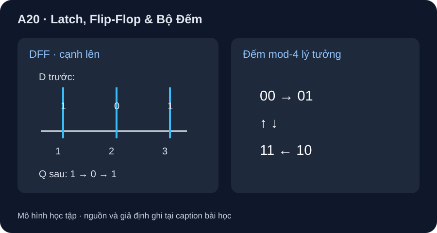

Latch, Flip-Flop & Bộ Đếm
Latch theo mức; D flip-flop chốt tại cạnh; bộ đếm cần điều kiện clock và điều khiển xác định.
- Phân biệt latch mở trong một mức enable với flip-flop lấy mẫu ở cạnh clock.
- Điền Q sau từng cạnh từ D ngay trước cạnh khi reset/preset bất hoạt.
- Trace bộ đếm nhị phân mod-4 trừu tượng và nhận ra điều kiện enable/reset của IC thật.

Đọc hình bằng chữ
Ba cạnh lên của clock được đánh số một, hai, ba; ngay trước chúng D ổn định lần lượt 1,0,1; Q ngay sau cạnh lấy lần lượt 1,0,1 trong mô hình lý tưởng. Một máy đếm hai bit riêng đi 00 rồi 01,10,11 và quay 00 nếu mọi cạnh đều được phép đếm.
1. Khi nào đầu ra có thể đổi?
Latch D nhạy mức: khi enable ở mức hoạt động, Q có thể theo D; khi đóng, giữ giá trị. D flip-flop kích cạnh lên lấy giá trị D quanh cạnh rồi giữ Q đến cạnh tiếp theo, trừ tác động bất đồng bộ. MIT 6.004 §5.1 giải thích latch, register và setup/hold. SN74HC74 Rev. F là DFF cạnh lên có ngõ preset/clear bất đồng bộ, nên không được áp mô hình cạnh lên nếu preset/clear đang tác động.
2. Ví dụ ba cạnh
Giả sử Q ban đầu 0, preset/clear bất hoạt, D đã ổn định trước mỗi cạnh lên và giữ đủ lâu sau cạnh. D trước các cạnh số 1,2,3 là 1,0,1; Q sau từng cạnh là 1,0,1. Nếu D đổi giữa hai cạnh mà không có ngõ bất đồng bộ, Q của DFF lý tưởng giữ nguyên; latch đang mở có thể đổi theo D. Khi dựng timing thật phải xét setup/hold và clock-to-Q, bài A21 sẽ làm rõ.
| Cạnh lên | D ổn định trước cạnh | Q DFF sau cạnh | Counter mod-4 sau cạnh (ban đầu 00) |
|---|---|---|---|
| 1 | 1 | 1 | 01 |
| 2 | 0 | 0 | 10 |
| 3 | 1 | 1 | 11 |
| 4 | chưa cho | chưa xác định từ đề | 00 |
Bộ đếm mod-4 hai bit tăng theo 00→01→10→11→00. SN74HC161 Rev. D là bộ đếm bốn bit đồng bộ có ngõ enable, load và clear; chuỗi hai bit ở hình không đồng nghĩa IC tự chạy mod-4 nếu chưa cấu hình ngõ điều khiển.
3. Hoạt động giấy/bảng tính
Vẽ bốn cạnh lên, cho Q ban đầu 0, D ổn định trước cạnh là 1,0,1,0. Điền Q sau từng cạnh; ở một dòng khác cộng một bit vào trạng thái counter hai bit và bỏ carry ở ngoài 2 bit. So với bảng trên cho ba cạnh đầu. Ghi rõ đây là mô hình chức năng, chưa kiểm cửa sổ setup/hold của part.
Không để preset/clear, load hay enable nổi và không suy clock tối đa từ trace. Chọn datasheet theo VCC/nhiệt/tải và kiểm pulse width, setup/hold, reset trước lab thật.
Q ban đầu 0; preset/clear bất hoạt. D ổn định trước ba cạnh lên lần lượt 0,1,1. Ghi Q sau từng cạnh. Bộ đếm hai bit ban đầu 00, được phép đếm ở cả ba cạnh: trạng thái sau mỗi cạnh là gì? Một lần đổi D giữa cạnh 2 và 3 có làm Q DFF đổi ngay không?
- 1 điểm: Q DFF sau ba cạnh
0,1,1. - 1 điểm: counter từ 00 cho
01,10,11. - 1 điểm: D đổi giữa hai cạnh không đổi Q ngay trong mô hình DFF cạnh lên khi ngõ bất đồng bộ bất hoạt.
- 1 điểm: muốn áp lên HC74/HC161 thật còn phải nêu các điều kiện control và setup/hold; trạng thái logic không là timing guarantee.